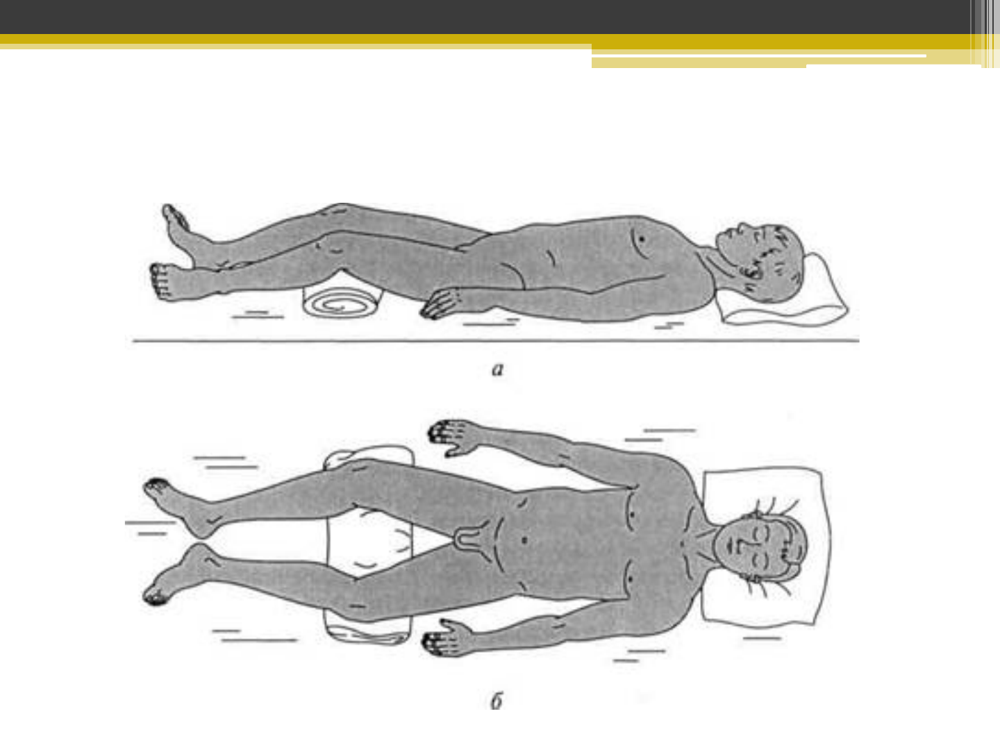
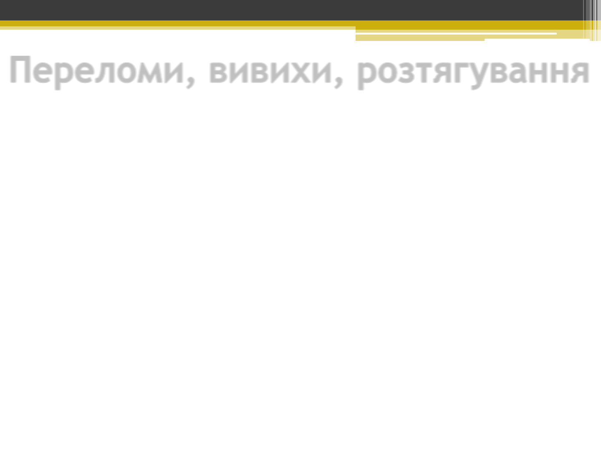
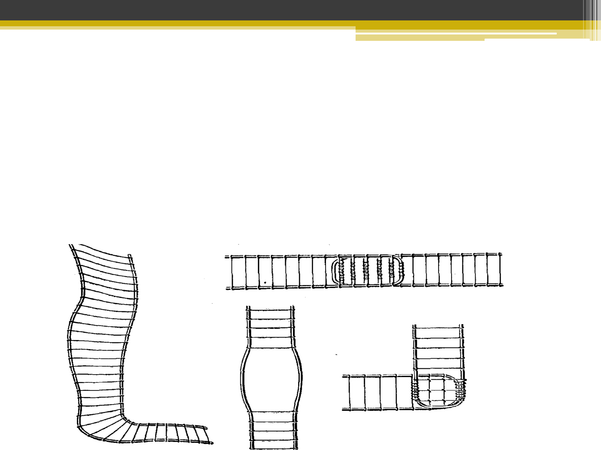

Харківськийнаціональнийуніверситет
іменіВ.Н.Каразіна
МЕДИЧНИЙ ФАКУЛЬТЕТ
КАФЕДРА ЗАГАЛЬНОЇ ПРАКТИКИ - СІМЕЙНОЇ МЕДИЦИНИ
ДОМЕДИЧНА ДОПОМОГА В ЕКСТРЕМАЛЬНИХ
СИТУАЦІЯХ
к. мед. н. Литвин О. І.
ДОМЕДИЧНА ДОПОМОГА В
ЕКСТРЕМАЛЬНИХ
СИТУАЦІЯХ
к. мед. н. Литвин О. І.
Тема 3. Види пошкоджень у
бойових та небойових умовах.
Домедична допомога (ДМД)
при пораненнях, переломах,
вивихах, розтягах.
Видипошкодженьубойовихтанебойовихумовах.Долікарськадопомогаприпораненнях,переломах,вивихах,розтягах.

Черепно-мозкова травма. Ознаки
Одна з найнебезпечніших травм, при якій механічною
дією (ударом каменю, повітряною хвилею при сході
лавини тощо) пошкоджується головний мозок і череп.
• Одразу після травми потерпілий бодай на мить
втрачає свідомість. Іноді він відзначає короткочасну
приголомшеність
• Протягом кількох днів після травми хворий може
пам'ятати події, що відбувалися на момент травми, і
навіть безпосередньо і після неї
• Пошкодження тканин голови може виявлятися у
вигляді виділень з вух (носа) світлої або рожевої
рідини, пошкоджень шкіри та тканин, що підлягають,
іноді з вибуханням в рану частини головного мозку

Черепно-мозкова травма. ДМД
1. Потерпілого у свідомості необхідно укласти на спину та контролювати його
стан.
2. Якщо потерпілий непритомний, слід надати йому стійке бічне становище, яке
зменшує ймовірність заходження мови і зводить до мінімуму можливість
попадання блювотних мас або крові в дихальні шляхи.
3. За наявності рани треба накласти пов'язку. Якщо у потерпілого відзначаються
ознаки порушення цілісності кісток черепа, необхідно обкласти краї рани
бинтами і лише після цього накладати пов'язку.
4. При развитии судорог следует попытаться обеспечить профилактику
дополнительных травм.
5. При повреждениях глаз следует наложить повязку с использованием
стерильного перевязочного материала из аптечки первой помощи. Повязка в
любом случае накладывается на оба глаза.
6. При отсутствии признаков дыхания необходимо приступить к проведению
сердечно-легочной реанимации в объеме компрессий грудной клетки и
искусственной вентиляции легких.

Хребетно-спинномозкова травма. Ознаки
• Ця травма ушкоджує хребет та спинний мозок і тому є небезпека
настання клінічної смерті.
• Найчастіші умови виникнення травми - удар або здавлювання хребта,
надмірне одномоментне викривлення, стрибок з висоти.
• Хворий може скаржитися на біль у спині, незвичайні відчуття у цій
галузі (печіння, зниження чутливості).
• Сила м'язів кінцівок при певних рухах знижена з одного або обох
сторін (потрібно перевірити при різноманітних рухах у кожному із
симетричних суглобів).
• При обмацуванні м'язи кінцівок розслаблені.
• Чутливість при дотику або легкому уколювання шкіри порушена
частіше в області стоп і кистей.
• Спостерігається затримка чи нетримання сечі.

Хребетно-спинномозкова травма. ДМД -I
1. Перед наданням допомоги необхідно переконатися, що вам,
потерпілому та іншим особам не загрожує небезпека
2. Необхідно провести огляд потерпілого, визначити його стан (у
свідомості або непритомний), наявність дихання: якщо дихання немає,
необхідно провести серцево-легеневу реанімацію.
3. Якщо потерпілий у свідомості або його подих збережено, необхідно
зафіксувати шийний відділ хребта.
4. Необхідно визначити, чи потрібна евакуація потерпілого з метою події.
5. Якщо потреби немає:
• не рухайте потерпілого
• укрийте потерпілого термопокривалом
• підтримуйте постраждалого психологічно
• не залишайте без нагляду

Хребетно-спинномозкова травма. ДМД- II
6. Якщо місце потенційно небезпечне:
перемістіть потерпілого на довгу дошку для
транспортування або рівну тверду поверхню (двері,
щит і т.д.). Для цього необхідно залучити
помічників. За жодних умов не можна переміщати
потерпілого самостійно, тому що це може призвести
до додаткових травм.
6. Обов'язково зафіксуйте постраждалого на дошці.
Перелом кісток тазу
Наслідок падіння, здавлення в області тазу, дуже
різкої напруги м'язів, прикріплених до його кісток.
• Ознаки. Хворий відзначає болючість у місці
перелому, що посилюється при обмацуванні цього
місця та при русі ніг. Іноді він не може підняти
випрямлену ногу, для досягнення меншої
хворобливості приймає вимушене становище із
зігнутими ногами. Біль у місці перелому
посилюється при стисканні таза руками з боків або
натисканні на лобок. Нерідко такі хворі
перебувають у стані шоку.

Перелом кісток тазу. ДМД
1. Проведіть протишокові заходи.
2. Транспортуйте хворого на щиті або жорстких
ношах. При цьому слід покласти його на спину
із зігнутими ногами і надати зручне положення
- зі зведеними або розведеними колінами.
Потім - підкласти валики під коліна, прив'язати
ноги та тулуб так, щоб зручне положення
зберігалося і при розслаблених м'язах. Якщо
потерпілий хоче лягти інакше, допоможіть йому
надати цього положення.
3. Не годуйте та поїть (загроза смертельно
небезпечного перитоніту через надходження
сечі та калу в порожнину очеревини у разі
поранення органів живота пошкодженими
кістками тазу).

Положення потерпілого з переломом
кісток таза

Переломи, вивихи, розтягування
Розтягнення характеризується появою різкого місцевого болю з порушенням
функцій суглобів.
Перша допомога при розтягуваннях така сама, що і при забоях:
Потерпілому необхідно забезпечити спокій
Накласти тугу пов'язку місце пошкодженого суглоба.
Для зменшення болю потерпілому дають знеболювальне, до місця травми
прикладають лід.
Вивих – усунення суглобових кінців кісток. Часто вивих супроводжується
розривом суглобової капсули. Найчастіше вивихи бувають у плечовому суглобі, у
суглобах нижньої щелепи та пальців рук. Ознаками вивиху є:
біль у кінцівці, різка деформація (западання) ділянки суглоба,
відсутність активних та неможливість пасивних рухів у суглобі,
фіксація кінцівки в неприродному положенні, що не піддається виправленню,
зміна довжини кінцівки, найчастіше її укорочення.

ДМД при вивиху:
ДМД при вивиху:
• проведення заходів спрямованих на зменшення болю
• (холод на місце пошкодженого суглоба, прийом
знеболювального)
• іммобілізація кінцівки у тому положенні, яке вона
прийняла після травми.
• верхню кінцівку підвішують на косинки, нижню
іммобілізують за допомогою шин або підручних засобів.
• вправлення вивиху здійснює лікар. При вивихах верхніх
кінцівок потерпілого спрямовують більш високий рівень
медичного забезпечення (пішки, транспортом).
• постраждалих з вивихом нижніх кінцівок транспортують
у положенні лежачи.

Переломи
• Переломи виникають унаслідок різких рухів, ударів, падіння з висоти та
інших причин.
• Бувають закритими та відкритими.
• При закритих переломах не порушується цілісність шкірного покриву, при
відкритих – у місцях перелому є рана. Найнебезпечніші відкриті переломи.
• Розрізняють переломи зі зміщенням та без зміщення кісткових уламків.
Основні ознаки переломів:
біль
припухлість
синці
незвичайна рухливість у місцях перелому
порушення функції кінцівки.
При рухах та обмацуванні місця перелому відзначається хрускіт (крепітація)
уламків кістки.
Вони можуть пошкодити кровоносні судини, нерви, м'язи та внутрішні органи,
що спричинить відповідні ускладнення.
При тяжких випадках переломи супроводжуються шоком. Особливо часто
розвивається шок при відкритих переломах із артеріальною кровотечею.

Переломи. Ознаки
Абсолютні ознаки перелому:
• Неприродне положення кінцівки
• Патологічна рухливість (при неповних
переломах визначається не завжди) - кінцівка
рухлива в тому місці, де немає суглоба
• Кріпітація (своєрідний хрускіт) - відчувається
під рукою в місці перелому, іноді чутна вухом.
Добре чутна при натисканні фонендоскопом на
місце пошкодження
• Кісткові уламки - при відкритому переломі вони
можуть бути видно в рані

ДМД при переломах
• Основне правило надання долікарської допомоги
при переломах - здійснення насамперед тих
заходів, від яких залежить збереження життя
потерпілого, а саме:
• зупинка артеріальної кровотечі,
• попередження травматичного шоку,
• накладання стерильної пов'язки на рану,
• проведення іммобілізації табельними чи
підручними засобами.
Транспортна іммобілізація. Техніка
накладання шин
• Транспортна іммобілізація - створення нерухомості
(спокою) пошкодженої частини тіла за допомогою
транспортних шин або підручних засобів на час,
необхідний для транспортування потерпілого (пораненого)
з місця отримання травми (поля бою) або етапу медичної
евакуації до лікувального закладу.
• Для попередження рухливості уламків кісток, шину
необхідно накладати таким чином, щоб вона фіксувала як
мінімум два суміжні суглоби (вище і нижче за місце
перелому).
• Гострі краї шин, наскільки можна, мають бути згладжені.
• Металеві шини перед накладанням згинають формою
здорової кінцівки.

Шина Крамера
• Дротова шина Крамера - являє собою решітку з
дроту, як правило, покриту тканиною або бинтом,
для зручності хворого, за рахунок гнучкості дроту
може приймати будь-яку необхідну в поточній
ситуації форму.

Імпровізовані шини
• Імпровізовані шини - дошки, палиці, шість,
скручені журнали та ін.
• Якщо підручні засоби відсутні, то іммобілізацію
можна проводити до тулуба потерпілого (при
переломі верхньої кінцівки) або до здорової
кінцівки (при переломі нижньої кінцівки)

Тактика надання долікарської допомоги
при дорожно-транспорній пригоді (ДТП)
• 1. Викликати бригаду швидкої допомоги
• 2. Переконатися в безпеці місця події та лише
після цього надавати допомогу потерпілому. Якщо
місце є небезпечним, дочекайтеся прибуття
рятувальників.
• 3. По можливості заблокуйте проїзд цією дорогою
за допомогою свого автомобіля або
попереджувальних знаків.
• 4. Якщо автомобіль стоїть під нахилом, заблокуйте
колеса, щоб запобігти його руху. Якщо двигун
продовжує працювати, вимкніть його